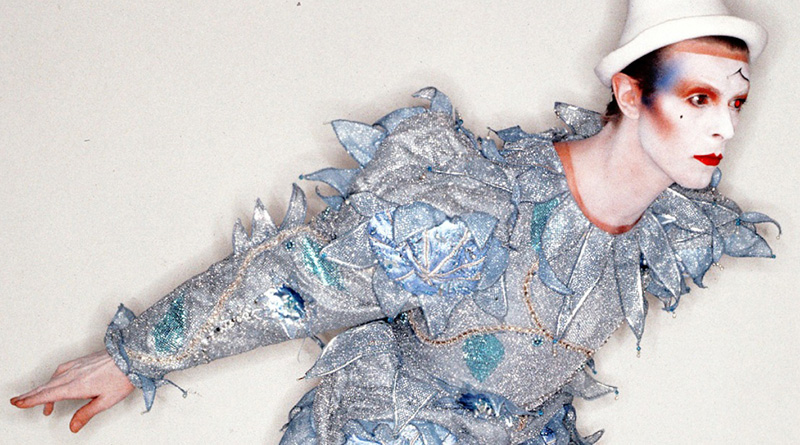

David Bowie
And His Many Faces

"Sweet name,"
"You're born once again for me"
- Bowie, Word on a Wing from Station to Station, 1976
David Bowie was an artist. Not in the traditional sense of a person with a paintbrush, or the slightly more advanced sense of a person who interacts in the field of art. David Bowie was an artist. An artist in all ways, whether it be his music, his acting, his dives into miming, his choices in fashion and especially his passion for renovating his personality and image. This passion of Bowie's, to be everchanging and unique and reborn in differing incarnations, is the focus of this website. This website is not centered on Bowie's exploits as a musician or as an actor, but focused on his image/personas and how it intertwined with the rest of his life.
Personas
Major Tom
Bowie’s first major experience delving into personas occurred with the song Space Oddity, in 1969. Major Tom was an astronaut in space, isolated and alone in the world after being cut off from the world. Later in his career, Major Tom was revisited in songs like “Ashes to Ashes” and “Hallo Spaceboy”.
Ziggy
The quintessential Bowie persona, encapsulating the spirit of British glam rock in the early 70s. A persona that expanded the boundaries of popular culture, by questioning traditional sexuality and masculinity.

Halloween Jack
A resident of Bowie’s fictitious apocalyptic “Hunger City”, this persona from 1974 represented a transition away from his glam rock phase and towards more soulful and art-rock albums.

Thin White Duke
The darkest of Bowie’s personas, created in the depths of his drug addiction to cocaine. Even though this persona only existed for a year, it is one of his most memorable personas due to how the character leaned towards dark topics like fascism and satanism.

Pierrot
Bowie had been a professional mime for quite some time in his early adulthood in the 60s. However, the character of Pierrot only existed for a short time, between the end of his artistic zenith in the 70s and his commercial dominance and artistic wane in the 80s.